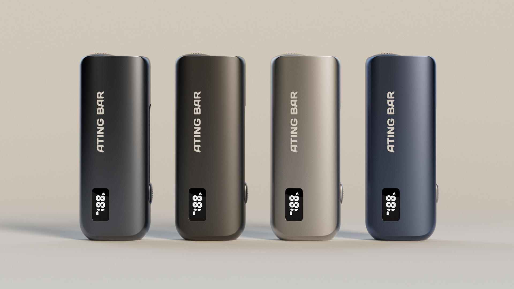

精选渲染案例
Ating Bar CMF 视觉系统
围绕金属质感、侧面结构、小型显示细节与产品配色系列建立的发布级视觉系统。
01 / 作品集
01A / 渲染区域

精选渲染案例
围绕金属质感、侧面结构、小型显示细节与产品配色系列建立的发布级视觉系统。
结合产品轮廓、背景字体与留白比例的首屏视觉构成。
围绕黑、蓝、银、金四种表面处理建立材质与视觉对比系统。
呈现按键、显示屏、倒角与侧边结构等局部产品细节。
01B / 视频区域
四个动态研究以独立视频模块呈现，让渲染作品与视频作品在作品集中保持清晰分区。
用于呈现表面节奏、灯光变化与干净展示节拍的产品动态序列。
面向产品流动、视觉转场、材质对比与发布页使用场景的视频模块。
用于硬件细节、动态清晰度与作品集评审场景的短视频呈现。
新增 4K 视频模块，用于补充产品动态、光影节奏与发布级视觉呈现。